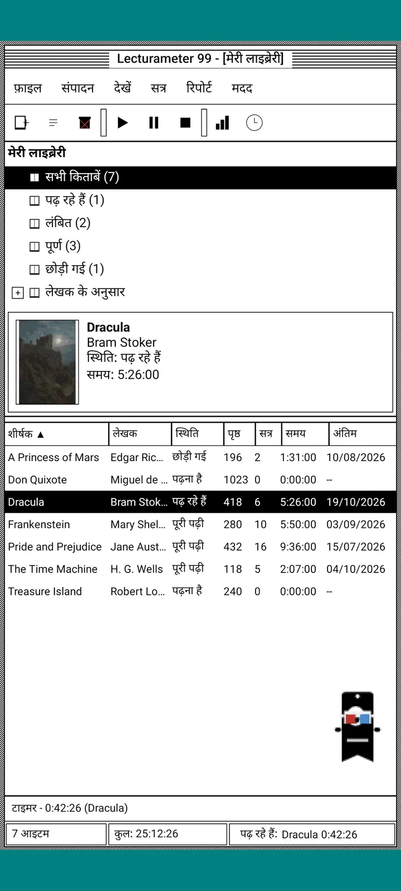
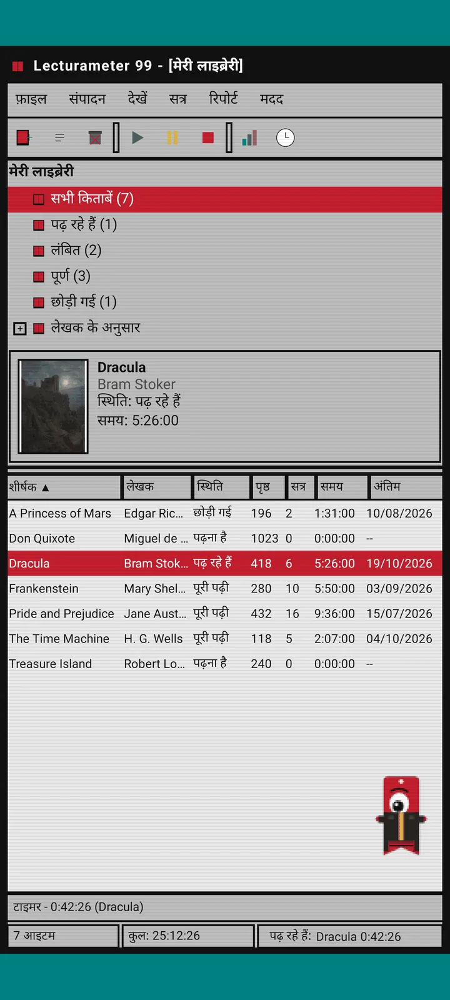
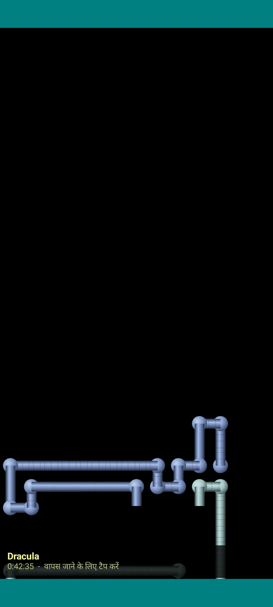

Lecturameter 1999
Lecturameter, मानो आपने उसे 1999 में CD-ROM से इंस्टॉल किया हो। ऐप का एक वैकल्पिक क्लाइंट, विंडो, मेन्यू और टेबल के साथ, जो आपके असली बैकअप खोलता है।

यह क्या है
नब्बे के दशक के आखिर का एक डेस्कटॉप प्रोग्राम, जो आपके फ़ोन पर चलता है। फ़िरोज़ी डेस्कटॉप पर एक विंडो, मेन्यू बार, टूलबार, फ़ोल्डर ट्री, भरी-पूरी टेबल और स्टेटस बार।
- लाइब्रेरी ट्री: सभी किताबें, पढ़ रहे हैं, लंबित, पूर्ण, छोड़ी हुई और लेखक के हिसाब से
- शीर्षक, लेखक, स्थिति, पन्ने, सत्र, समय और आखिरी बार पढ़ने की तारीख वाली टेबल। क्रमबद्ध करने के लिए कॉलम के हेडर पर टैप करें
- किताबों की असली खोज, उसी कैटलॉग से जो Lecturameter इस्तेमाल करता है
- Lecturameter का बैकअप और Goodreads की CSV आयात और निर्यात करता है। आपका डेटा बिना कुछ खोए आता-जाता है

यह क्यों है
एक प्रयोग: असली ऐप को छुए बिना, Lecturameter के विचार को बिल्कुल अलग डिज़ाइन सिद्धांतों के साथ शुरू से दोबारा बनाना। सभी नए रूपों में से 1999 वाला मुझे सबसे ज़्यादा पसंद आया, इसलिए मैंने मज़े के तौर पर उसे पूरा किया और एक पूरा क्लाइंट बना दिया। यह जानबूझकर Lecturameter से सरल है: यह एक प्रयोग है और, फ़िलहाल, इस पर आगे कोई काम नहीं होगा।
- हरे LCD डिस्प्ले वाली तैरती विंडो में टाइमर। यह हिलता है, टास्कबार में छोटा हो जाता है और स्टेटस बार में गिनती जारी रखता है
- रोकने पर, सत्र सहेजने वाला डायलॉग आपके पन्ने पूछता है और आपकी रफ़्तार निकालता है, बिल्कुल Lecturameter की तरह
- सहेजे गए सत्र Lecturameter के ही सत्र हैं: अगर आप Lecturameter 1999 का बैकअप निर्यात करके Lecturameter में आयात करें, तो वे आधुनिक ऐप में लौट आते हैं।

पढ़ने की रिपोर्ट
आँकड़े एक छपी हुई रिपोर्ट जैसे हैं: सारांश, ब्लॉक बार के साथ हर किताब का समय, प्रति दिन पन्नों में गति, अक्षरों से बना साल का कैलेंडर और पिछले सात दिन।

सत्र इतिहास
प्लस और माइनस वाले ट्री में किताब के हिसाब से समूहित सत्र, ऊपर पाँच आँकड़ों के साथ: सत्र, कुल समय, पन्ने, प्रति मिनट पन्ने और प्रति दिन पन्ने।

सत्र सहेजें
तारीख, मिनट, पहला और आखिरी पन्ना, टिप्पणी। टाइप करते ही सारांश पन्ने और रफ़्तार निकाल देता है। अगर आप आखिरी पन्ने तक पहुँचते हैं, तो पूछता है कि क्या आपने किताब पूरी कर ली।

Pagi 99
Pagi भी 1999 में पहुँच जाता है: पिक्सेल वाला और स्क्रीन पर खुला घूमता, उस ज़माने के ऑफ़िस सहायकों की तरह। आप उसे खींच सकते हैं, टैप करने पर वह कुछ कहता है और पीले गुब्बारों में टिप्स दिखाता है।
थीम
Classic 98 मुफ़्त है और डिफ़ॉल्ट है। पैक में छह और थीम हैं, हर एक की अपनी बैकग्राउंड और अपनी आवाज़ें।

इसे व्यू मेन्यू से चुनें
व्यू, थीम... सातों थीम वाली एक विंडो खोलता है। बदलाव एक साथ हर विंडो, टाइमर और Pagi तक पहुँचता है।
- Classic 98, मुफ़्त और डिफ़ॉल्ट: स्लेटी विंडो, गहरे नीले टाइटल बार और फ़िरोज़ी डेस्कटॉप
- थीम पैक: 1984, Gumdrop, Memory, Towers, Core और 8-bit
- हर थीम अपनी डेस्कटॉप बैकग्राउंड और टैप, विंडो और टाइमर की अपनी आवाज़ें लाती है
- अगर आप चुपचाप पढ़ते हैं, तो व्यू, थीम की आवाज़ें से आवाज़ें बंद करें

Classic 98
स्लेटी विंडो, गहरे नीले टाइटल बार और फ़िरोज़ी डेस्कटॉप। मुफ़्त, ऐप इसी के साथ खुलता है।

1984
एक-बिट वाला काला-सफ़ेद डेस्कटॉप, बिंदुओं के पैटर्न और चौकोर विंडो के साथ।

Gumdrop
पारदर्शी रंगीन प्लास्टिक, गोल बटन और बैकग्राउंड में धारियाँ।

Memory
नब्बे के दशक के डिस्क कंसोल के मेन्यू, गहरे नीले रंगों में।

Towers
नब्बे के दशक का एक और डिस्क कंसोल, हल्की नीली लाइनों के साथ रात जैसा नीला।

Core
काला और हरा कंसोल, ऐसी स्क्रीन जैसा जो कभी बंद नहीं होती।

8-bit
मोटे पिक्सेल, कम रंग और चौकोर अक्षर।

पैसे देने से पहले आज़माएँ
किसी लॉक थीम पर टैप करें और पूरा ऐप उसी में बदल जाता है। अगर आप बिना खरीदे बंद करते हैं, तो पिछली थीम लौट आती है।
स्क्रीनसेवर
ये सिर्फ़ तब दिखते हैं जब टाइमर चल रहा हो और आप फ़ोन को छोड़ दें। ये 1, 3 या 5 मिनट इंतज़ार करते हैं, या कभी नहीं। एक टैप से आप वापस आ जाते हैं और टाइमर गिनती जारी रखता है।

उड़ती किताबें
काली स्क्रीन पर अपने कवर फड़फड़ाती पिक्सेल किताबें।

अक्षरों का मैदान
कई वर्णमालाओं के अक्षर तैरते हुए गुज़रते हैं, तारों भरे आसमान की तरह।

पन्नों की पाइपें
पन्नों से बनी पाइपें, जो खुद बनती जाती हैं जब तक स्क्रीन भर न जाए।

उछलता Pagi
स्क्रीन के किनारों से टकराकर उछलता Pagi।

पढ़ने की घड़ी
बड़े LCD अंकों में सत्र का समय।

Pagi के लिए पोशाकें
Pagi 99 के लिए आठ पोशाकें। इन्हें व्यू, Pagi की पोशाक... में चुनें, और पैसे देने से पहले पहनाकर देख सकते हैं।
- कैसेट प्लेयर
- उल्टी टोपी
- 3D चश्मा
- नियॉन धूप का चश्मा
- हाथ में फ़्लॉपी डिस्क
- चमड़े की जैकेट
- पॉकेट पेट
- गत्ते का मुकुट
स्टोर
पढ़ाई दर्ज करने के लिए ऐप मुफ़्त और पूरा है। जो आप खरीद सकते हैं, वह सिर्फ़ उसका रूप बदलता है।
पूरा ऐप, बिना किसी समय-सीमा के।
- लाइब्रेरी, खोज, टाइमर और सत्र
- पढ़ने की रिपोर्ट और सत्र इतिहास
- Lecturameter बैकअप और Goodreads CSV, आयात और निर्यात
- Classic 98 थीम और Pagi 99
- न कोई खाता, न कोई विज्ञापन
एक बार का भुगतान, कोई सब्सक्रिप्शन नहीं।
- थीम पैक, €3.49: बैकग्राउंड और आवाज़ों वाली 6 थीम, साथ में स्क्रीनसेवर
- स्क्रीनसेवर, €1.99: सभी 5 स्क्रीनसेवर
- Pagi की पोशाकें, €1.99: सभी 8 पोशाकें
- पूरा 1999, €4.49: थीम, स्क्रीनसेवर और पोशाकें
सहायता मेन्यू में वैकल्पिक टिप्स, अगर आप मुझे एक कॉफ़ी पिलाना चाहें।
थीम और पोशाकें पैसे देने से पहले लाइव आज़माई जा सकती हैं। अगर आप बिना खरीदे बंद करते हैं, तो जो पहले था वह लौट आता है।
Lecturameter की तुलना में क्या बदलता है
Lecturameter जैसा ही
- वही डेटा: किताबें, सत्र, स्थितियाँ, स्कोर और नोट्स। बैकअप फ़ाइल दोनों ऐप्स में एक ही है।
- शीर्षक या लेखक से किताब खोजें।
- असली टाइमर: बैकग्राउंड में और ऐप बंद करने पर भी गिनती जारी रखता है।
- न खाता, न विज्ञापन, किताबें खोजने के अलावा कोई कनेक्शन नहीं।
- Lecturameter जैसी ही भाषाएँ।
सिर्फ़ 1999 संस्करण में
- 1999 का डेस्कटॉप इंटरफ़ेस। Material नहीं।
- असली विंडो: आप उन्हें खींचते हैं, छोटा करते हैं और क्रॉस से बंद करते हैं।
- टेक्स्ट में पढ़ने की रिपोर्ट, अक्षरों से बने कैलेंडर के साथ।
- लंबा दबाने पर संदर्भ मेन्यू, और कीबोर्ड जोड़ने पर कीबोर्ड शॉर्टकट।
- टिप गुब्बारों के साथ पिक्सेल वाला Pagi 99।
- अपनी बैकग्राउंड और आवाज़ों वाली वैकल्पिक थीम, टाइमर चलते समय स्क्रीनसेवर और Pagi के लिए पोशाकें।
जानबूझकर क्या छोड़ा गया है
- न Pro, न सब्सक्रिप्शन। पढ़ाई दर्ज करना पूरी तरह मुफ़्त है, स्टोर सिर्फ़ रूप बेचता है।
- न चुनौतियाँ, न Bingo, न सालाना Wrapped, न विजेट।
- न इमर्सिव सत्र, न माहौल की आवाज़ें, न गूगल ड्राइव बैकअप। बैकअप एक फ़ाइल के रूप में सेव होता है।
बंद टेस्ट
Lecturameter 1999, Google Play पर बंद टेस्टिंग में है। iOS बाद में आएगा, अभी कोई तारीख नहीं।
- ग्रुप से जुड़ें groups.google.com/g/lecturameter-1999
- टेस्टर के रूप में साइन अप करें: play.google.com/apps/testing/com.lecturameter.r1999
- इसे यहाँ से इंस्टॉल करें: Google Play
Google Play पर बंद टेस्टिंग में, iOS बाद में। ब्लॉग पोस्ट पढ़ें यह जानने के लिए कि यह कहाँ से आया और इससे क्या उम्मीद करें।